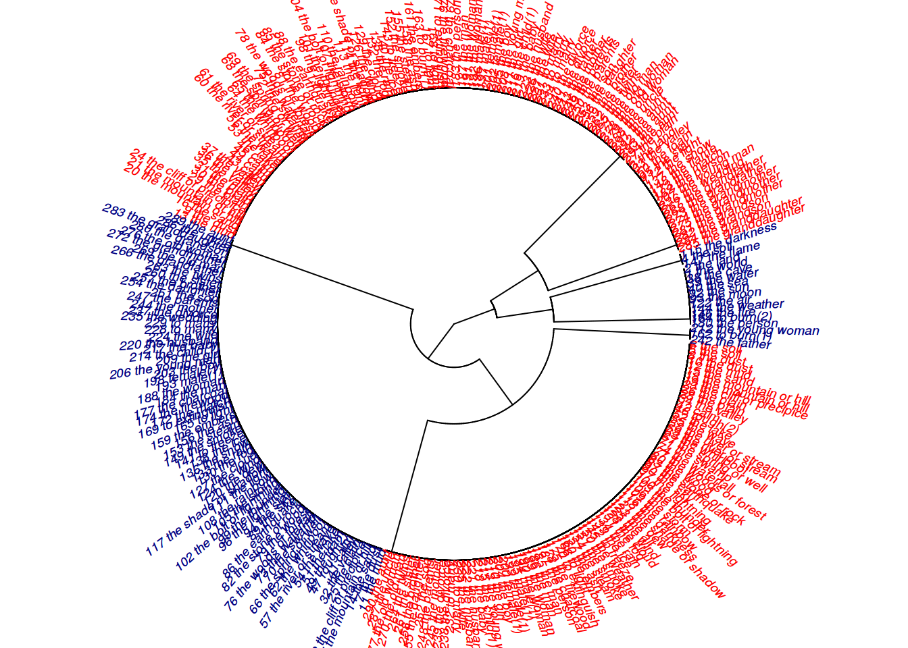

Lab 12. Claster analysis
Assignment link
library(tidyverse)1.
df <- read.csv("https://raw.githubusercontent.com/agricolamz/2018-MAG_R_course/master/data/baltic.csv")
d <- dist(t(df[,3:6]))
set.seed(42)
kmeans(d, 3)## K-means clustering with 3 clusters of sizes 1, 2, 1
##
## Cluster means:
## Old.Prussian Latvian Lithuanian outlier
## 1 6.403124 10.295630 11.000000 0.000000
## 2 10.318490 4.974937 4.974937 10.647815
## 3 0.000000 10.148892 10.488088 6.403124
##
## Clustering vector:
## Old.Prussian Latvian Lithuanian outlier
## 3 2 2 1
##
## Within cluster sum of squares by cluster:
## [1] 0.0000 99.3056 0.0000
## (between_SS / total_SS = 67.7 %)
##
## Available components:
##
## [1] "cluster" "centers" "totss" "withinss"
## [5] "tot.withinss" "betweenss" "size" "iter"
## [9] "ifault"hc <- hclust(d)
plot(hc)
2.
df <- read.csv("http://goo.gl/Zjr9aF")
row.names(df) <- df$speaker
d <- dist((df[,-c(6:9, 1)]))
min(d)## [1] 15.79903set.seed(42)
km <- kmeans(d, 2)
cbind.data.frame(cluster = km$cluster, orientation = df$orientation) %>%
count(cluster, orientation)plot(df[,-c(6:9, 1)], col = km$cluster, pch = c(16, 1)[df$orientation])
df %>%
mutate(cluster = km$cluster) %>%
group_by(cluster) %>%
summarise(mean = mean(perceived.as.homo.percent),
sd = sd(perceived.as.homo.percent))hc <- hclust(d)
plot(hc)
p <- pvclust::pvclust(t(df[,-c(1, 9, 10)]),
method.dist="cor",
method.hclust="average",
nboot=100)## Bootstrap (r = 0.43)... Done.## Warning: inappropriate distance matrices are omitted in computation: r =
## 0.428571428571429## Bootstrap (r = 0.57)... Done.
## Bootstrap (r = 0.57)... Done.
## Bootstrap (r = 0.71)... Done.
## Bootstrap (r = 0.86)... Done.
## Bootstrap (r = 1.0)... Done.
## Bootstrap (r = 1.0)... Done.
## Bootstrap (r = 1.14)... Done.
## Bootstrap (r = 1.29)... Done.
## Bootstrap (r = 1.29)... Done.## Warning in a$p[] <- c(1, bp[r == 1]): number of items to replace is not a
## multiple of replacement lengthplot(p)3
library(ape)
df <- read.csv("https://goo.gl/4sJqv1")
data <- df[,-c(1:3)]
row.names(data) <- paste(1:294, df$english)
data %>%
dist() %>%
hclust() ->
hc
plot(as.phylo(hc),
type = "fan",
cex = 0.6,
no.margin = TRUE,
tip.color = c("red",
"blue",
"green",
"black",
"yellow",
"pink",
"navy")[df$cognate_set])